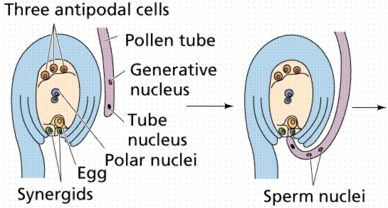
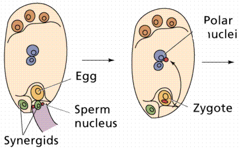
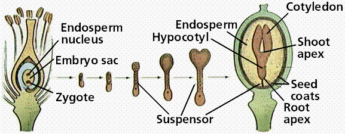

Flowers | Double Fertilization | Seeds | Fruit | Vegetative propagation | Links
Pollen grains (from the greek palynos for dust or pollen) contain the male gametophyte (microgametophyte) phase of the plant. Pollen grains are produced by meiosis of microspore mother cells that are located along the inner edge of the anther sacs (microsporangia). The outer part of the pollen is the exine, which is composed of a complex polysaccharide, sporopollenin. Inside the pollen are two (or, at most, three) cells that comprise the male gametophyte. The tube cell (also referred to as the tube nucleus) develops into the pollen tube. The germ cell divides by mitosis to produce two sperm cells. Division of the germ cell can occur before or after pollination.
The tetrad of four haploid cells is located inside an anther sac (microsporangium) of Lilium. The above image is cropped from gopher://wiscinfo.wisc.edu:2070/I9/.image/.bot/.130/Angiosperm/Lilium/Adroecium/Anther_pollen_tetrads.
Mature 2-cell stage of a pollen grain. Note the thick sculptured exine around the pollen grain of Lilium. The above image is cropped and reduced from gopher://wiscinfo.wisc.edu:2070/I9/.image/.bot/.130/Angiosperm/Lilium/Adroecium/Mature_2-celled_pollen_grains.
Allergenic Pollen (poplar, alder, timothy grass, ragweed, sagebrush, scotchbroom) (SEM x1,000). This image is copyright Dennis Kunkel at www.DennisKunkel.com, used with permission.
The transfer of pollen from the anther to the female stigma is termed pollination. This is accomplished by a variety of methods. Entomophyly is the transfer of pollen by an insect. Anemophyly is the transfer of pollen by wind. Other pollinators include birds, bats, water, and humans. Some flowers (for example garden peas) develop in such a way as to pollinate themselves. Others have mechanisms to ensure pollination with another flower.
Flower color is thought to indicate the nature of pollinator: red petals are thought to attract birds, yellow for bees, and white for moths. Wind pollinated flowers have reduced petals, such as oaks and grasses.
The gynoecium consists of the stigma, style, and ovary containing one or more ovules. These three structures are often termed a pistil or carpel. In many plants, the pistils will fuse for all or part of their length.
Lilium gynoecium. The above image is reduced and relabeled from gopher://wiscinfo.wisc.edu:2070/I9/.image/.bot/.130/Angiosperm/Lilium/Flower_dissection/Ovary.
The Stigma and Style
The stigma functions as a receptive surface on which pollen lands and germinates its pollen tube. Corn silk is part stigma, part style. The style serves to move the stigma some distance from the ovary. This distance is species specific.
The Ovary
The ovary contains one or more ovules, which in turn contain one female gametophyte, also referred to in angiosperms as the embryo sac. Some plants, such as cherry, have only a single ovary which produces two ovules. Only one ovule will develop into a seed.
Cross section of an ovary of Lilium. Note the ovules in the center of the ovary. The above image is reduced from gopher://wiscinfo.wisc.edu:2070/I9/.image/.bot/.130/Angiosperm/Lilium/Gynoecium/L._ovary_x.s. Follow the link to view a larger image.
The male gametophyte develops inside the pollen grain. The female gametophyte develops inside the ovule. In flowering plants, gametophyte phases are reduced to a few cells dependant for their nutrition on the sporophyte phase. This is the reverse of the pattern seen in the nonvascular plant groups liverworts, mosses, and hornworts (the Bryophyta).
Angiosperm male gametophytes have two haploid nuclei (the germ nucleus and tube nucleus) contained within the exine of the pollen grain (or microspore).
Female gametophytes of flowering plants develop within the ovule (megaspore) contained within an ovary at the base of the pistil of the flower. There are usually eight (haploid) cells in the female gametophyte: a) one egg, two synergids flanking the egg (located at the micropyle end of the embryo sac); b) two polar nuclei in the center of the embryo sac; and three antipodal cells (at the opposite end of the embryo sac from the egg).
Megaspore mother cell of Lilium. The above image is cropped, reduced, and labeled from gopher://wiscinfo.wisc.edu:2070/I9/.image/.bot/.130/Angiosperm/Lilium/Gynoecium/Ovules_megaspore_mother_cell. Follow the link to view a larger image.
Four celled stage of the female gametophyte of Lilium. The above image is reduced and cropped from gopher://wiscinfo.wisc.edu:2070/I9/.image/.bot/.130/Angiosperm/Lilium/Gynoecium/Embryo_Sac/4-nucleate_stage. Follow that link to view a larger image.
Lilium eight-celled female gametophyte. The above image is cropped and reduced from gopher://wiscinfo.wisc.edu:2070/I9/.image/.bot/.130/Angiosperm/Lilium/Gynoecium/Embryo_Sac/8-nucleate_stage. Follow the link to view a larger image.
The process of pollination being accomplished, the pollen tube grows through the stigma and style toward the ovules in the ovary. The germ cell in the pollen grain divides and releases two sperm cells which move down the pollen tube. Once the tip of the tube reaches the micropyle end of the embryo sac, the tube grows through into the embryo sac through one of the synergids which flank the egg. One sperm cell fuses with the egg, producing the zygote which will later develope into the next-generation sporophyte. The second sperm fuses with the two polar bodies located in the center of the sac, producing the nutritive triploid endosperm tissue that will provide energy for the embryo's growth and development.
Pollen tube with haploid male gametophyte nuclei. The above image is cropped from http://www.life.umd.edu/pbio100/plso19.jpg.
Germinating Pollen Grain from a Lily, Sauromatum guttatum (SEM x3,300). This image is copyright Dennis Kunkel at www.DennisKunkel.com, used with permission.

Structure of the female gametophyte (enbryo sac) and the events approaching fertilization. Image from Purves et al., Life: The Science of Biology, 4th Edition, by Sinauer Associates (www.sinauer.com) and WH Freeman (www.whfreeman.com), used with permission.

The events of "double fertilization" of the egg and polar nuclei by the two sperm cells. Image from Purves et al., Life: The Science of Biology, 4th Edition, by Sinauer Associates (www.sinauer.com) and WH Freeman (www.whfreeman.com), used with permission.

Stages of growth and development of the embryo. Image from Purves et al., Life: The Science of Biology, 4th Edition, by Sinauer Associates (www.sinauer.com) and WH Freeman (www.whfreeman.com), used with permission.
Structure of two dicot seeds. Image from Purves et al., Life: The Science of Biology, 4th Edition, by Sinauer Associates (www.sinauer.com) and WH Freeman (www.whfreeman.com), used with permission.
Seeds in a Pod, Arabidopsis sp. (SEM x220). This image is copyright Dennis Kunkel at www.DennisKunkel.com, used with permission.
The ovary wall, after fertilization has occurred, develops into a fruit. Fruits may be fleshy, hard, multiple or single. View the Seeds of Life site for illustrations and information about fruits and seeds. Seeds germinate, and the embryo grows into the next gemeration sporophyte.
Coconut fruit containing the seed you usually buy at the grocery store. Image from Purves et al., Life: The Science of Biology, 4th Edition, by Sinauer Associates (www.sinauer.com) and WH Freeman (www.whfreeman.com), used with permission.
Many plants also have an asexual method of reproduction. Often some species, such as many orchids, are more frequently propagated vegetatively than via seeds. Tubers are fleshy underground stems, as in the Irish potato. Leaflets are sections of leaf will develop roots and drop off the plant, effectively cloning the plant. Runners are shoots running along or over the surface of the ground that will sprout a plantlet, which upon settling to the ground develop into a new independant plant.
Email: mj.farabee@emcmail.maricopa.edu
Last modified:
The URL of this page is:
{kind=link}